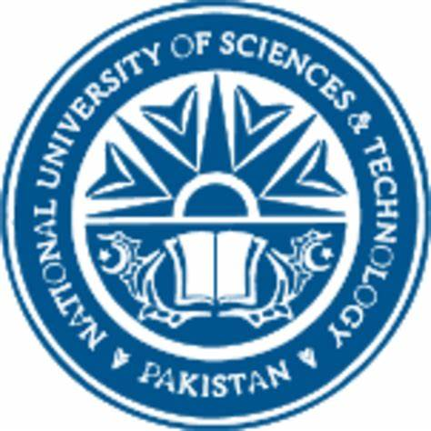
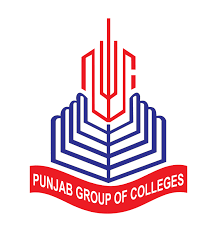
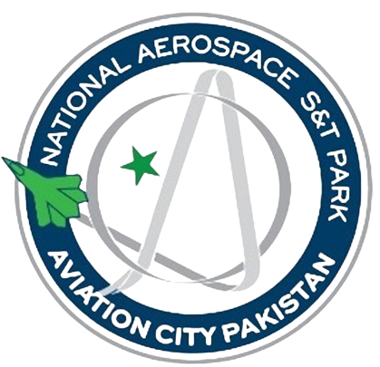

BSc Mechatronics Engineering
Sep 2019 – Jun 2023
National University of Sciences & Technology (NUST), Islamabad
- GPA: 3.56 / 4.00
- Coursework/Focus: Robotics, Control Theory, Systems Engineering, Modeling & Simulation
- Thesis (Capstone): Development of a Force Sensor–Integrated Surgical Instrument for Tele-Manipulation–Based MIS
- Masters Courses (Audit): Biomedical Instrumentation, Robotics Manipulation, Machine Learning
2x Academic Excellence Awards: Received for securing SGPA > 3.5 in 4 consecutive semesters
1st Runner-up NERC: Led the team in the indigenous category of Pakistan’s largest robotics contest (NERC 2022).
Ignite Funding Competition: Secured project funding in the National Technology Innovation competition.
Distinguishing Student Award: “Company Senior NUST Student” (most senior student appointment).
Robotics & Automation Club: Mentored students through robotics and C/C++ workshops.

Pre-Engineering (Intermediate)
2017 – 2019
Punjab Group of Colleges, Pattoki
- Grade: A+
- Class Representative & Cricket Team Captain
Regional Distinction: Ranked top in Kasur district during Intermediate (First Year)
Scholarship: Awarded a fully funded scholarship for Junior and Senior Year

Systems Engineer (Avionics / Systems Integration)
Sep 2023 – Present
National Aerospace Science & Technology Park (NASTP)
- Co-developed a modular SIL/HIL lab applying systems engineering across the V-model lifecycle.
- Built a C++/Qt Data Acquisition & Control System (DACS), a MIL-STD-1553B bus emulator, and software simulators to enable modular SIL development and system-level verification.
- Streamlined lab support/maintenance via automation tooling to reduce technician workload and turnaround times.
Professional Certification: Associate Systems Engineering Professional (ASEP) certified by INCOSE
- Contributed to “Nanomaterials-based Tactile Sensors for Tele-Manipulation in Robotic Surgery.”
- Designed a sensorized laparoscopic grasper with a flexible capacitive force sensor, achieving decoupled force measurement and real-time haptic feedback via a wearable band.
- Validated designs with FEM simulations and electromechanical optimization.
Research and Development Intern
Summer 2022
National Centre of Robotics and Automation
- Implemented and validated forward and inverse kinematics algorithms for a 6-DOF UR5 robotic manipulator in MATLAB, enabling accurate motion simulation and visualization.
- Explored mathematical modeling and analysis of robotic systems, gaining hands-on exposure to applications across medical, agricultural, and manufacturing domains.